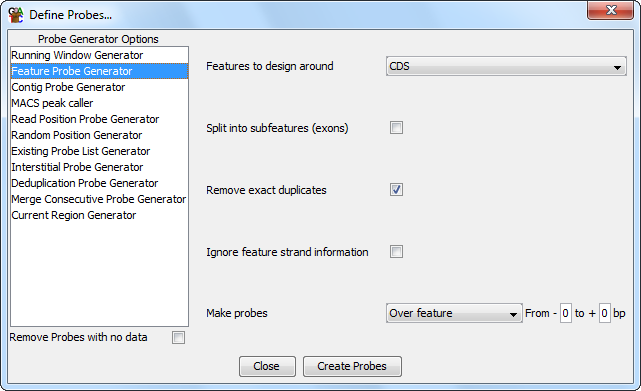

The Feature Probe Generator
The feature probe generator allows to to design probes around
a class of annotation features. You can design in different
locations around the feature as you can select between making
a probe over the feature, upstream of it, downstream of it or
centered on it.
The feature probe generator is useful when you are only interested
in probes which relate to features.
Options

The options you can set for this generator are:
- The class of feature against which you want to design probes
- If you want to split your feature into subfeatures. If you select this
then you will get a set of probes for each exon in a multi-exon feature
such as mRNA. If two mRNAs share a common exon then you will get duplicate
probes generated.
- If you want to remove exact duplicate probes. If you have exactly duplicated
features then this will leave only one copy of each. This can be useful when
designing probes around exons in mRNA features for example.
- If you want to ignore any strand information which is present on the features
you're using. If you select this then each feature, and the associated probes will
be assigned the unknown strand. This will affect the position of upstream and
downstream probes for features assigned to the reverse strand, and since this will
pass through to the probes generated it will also affect directional analyses such
as the probe trend plot.
- What type of probe you want to generate (upstream, downstream, over the feature
or centred on it
- The amount of space you want to add at the end of the type of region you defined.
If you have selected anything other than 'Over the feature' you will need to change
either the start or end value here or you'll end up with 1bp probes
- If you want to design a probe within the feature. The first value is
relative to the 5-prime end of the feature and the second value is relative
to the 3-prime end of the feature, so -100 to +200 would be from 100bp upstream
of the feature to 200bp downstream
- If you want to design a downstream probe. If you do then you can set
the downstream region you wish to use. The origin is the end of the 3-prime
end of the feature, so -500 to +100 would be 500bp upstream of the end to
100bp downstream